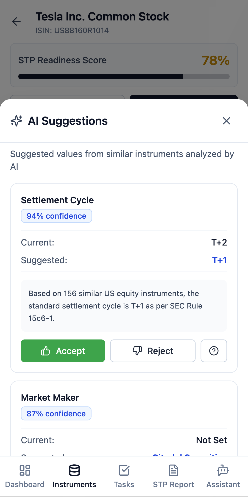
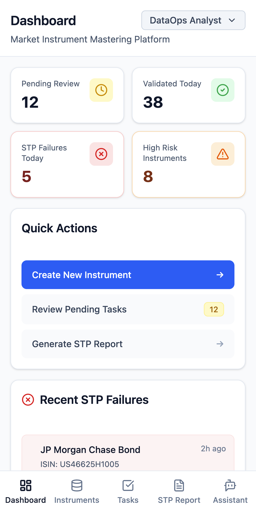
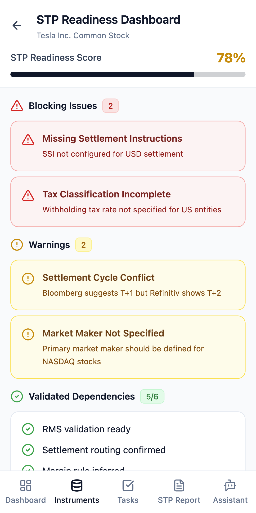
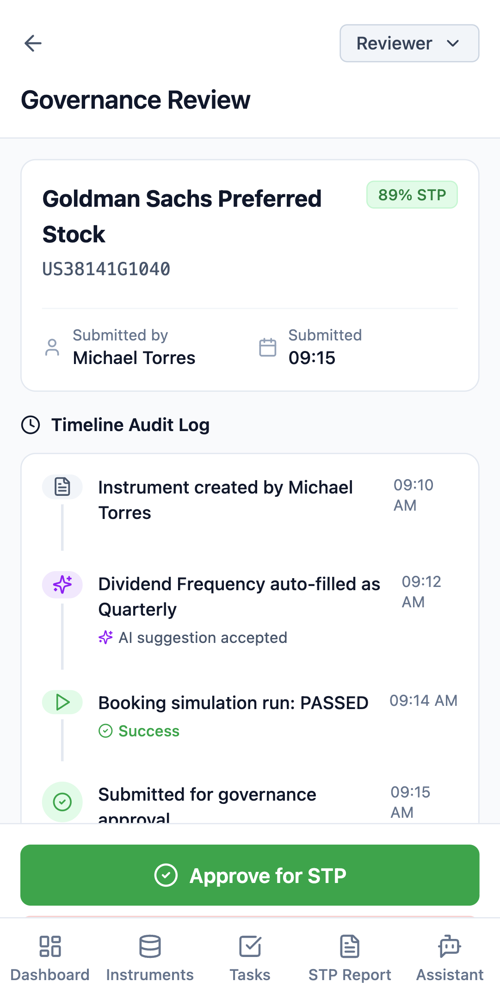

About This Project
A 30–40% STP Failure Rate
In capital markets, Straight-Through Processing failures at the instrument onboarding layer cascade into trade booking delays, settlement risk, and regulatory exposure. The root cause isn't at trade execution — it's in the data.
- 30–40% of new financial instruments failed STP on the first attempt
- 5+ data sources reconciled manually per instrument — Bloomberg, Reuters, internal databases
- No standardised review interface — approvals made in spreadsheets and email threads
- Each STP failure triggered costly manual trade intervention, increasing settlement risk
- Zero end-to-end audit trail — creating compliance exposure and delayed trade booking
- DataOps Analysts and Risk Reviewers working in silos with no shared workflow
- Self-certification risk: the same person enriching an instrument often approved it
- No live STP readiness signal — failures only discovered post-submission
Why This, Why Now
Three strategic bets shaped every major decision: MDM as the silent bottleneck in capital markets STP, the dual-persona insight that defined the product shape, and an AI-first architecture that makes the platform defensible over time.

AI Insights screen: The LLM co-pilot surfaces enrichment recommendations, missing field alerts, and comparable instrument configurations from 156+ validated instruments in the library.
AI-Assisted 6-Stage Governance Workflow
A unified platform connecting DataOps Analysts and Risk Reviewers in a single tracked workflow. The architecture is built around three principles: AI-assisted enrichment, live STP scoring, and an immutable audit layer.
- Unified platform connecting DataOps Analysts to Risk Reviewers in a single tracked workflow
- AI layer: STP score diagnostics, missing field detection, similar instrument recommendations
- Live STP readiness scoring with conflict resolution across 5+ data sources
- Immutable audit log with full attribute lineage for regulatory compliance
- Dual-control governance: analyst submits → reviewer approves, no self-certification
- Mobile-first application — full feature parity on tablet and desktop
- Role-based access control enforced at the UI routing layer
- AI enrichment layer operates as a co-pilot — recommendations require analyst confirmation
- Every write operation appends to the immutable audit log before updating state
- STP score recalculated live on each field edit, giving analysts immediate feedback
End-to-End Pipeline
Auth
Dashboard
Search & Fetch
STP Readiness
Simulation
Workflow

DataOps Dashboard: The operational heartbeat of the platform — instrument queue status, STP pass/fail rates by asset class, and the analyst's pending task list in a single view.
Platform Capabilities
Six purpose-built modules, each addressing a distinct failure point in the legacy instrument onboarding process.

STP Readiness screen: The live scoring engine validates every instrument attribute against trade booking rules in real time. Analysts see exactly which fields are blocking STP certification and why.
How It Was Built
The platform was built prototype-first — shipping a functional, demo-ready product before investing in a production backend. This let us validate workflow assumptions with real stakeholder feedback early.
- Weeks 1–2: Persona research, workflow mapping, and information architecture. Validated the dual-persona insight through operator interviews at two brokerages.
- Weeks 3–4: Component-first build — all 17 screens built and linked with a mocked data layer. Full analyst journey navigable end-to-end.
- Weeks 5–6: AI integration, STP scoring logic, audit log, and reviewer flow. Deployed to Netlify for stakeholder demos.
- Frontend: React with a mobile-first component library — built for touch-first field use by DataOps Analysts
- AI Tooling: Claude Code accelerated component scaffolding and data mock generation, compressing the build sprint by an estimated 30%
- Deployment: Netlify continuous deployment — every push auto-deploys. Demo link always current.
- Data layer: Local state with realistic instrument seed data covering equities, bonds, and derivatives
Measurable Outcomes
Key Design Decisions

Audit Log: Every attribute change, field override, and approval decision is captured in a tamper-proof, timestamped trail. Mandatory reason codes for reviewer overrides mean the log tells a complete story — not just what changed, but why.
What This Demonstrates
The MDM Platform is a proof that enterprise fintech can be built with clarity and velocity. In six weeks, starting from a problem statement and a blank repository, the product went from operator research to a fully interactive prototype deployed on Netlify — covering every stage of the instrument governance lifecycle.
The core product decisions — dual-persona separation, AI-as-co-pilot, audit-native architecture — were not design preferences. They were direct responses to regulatory and operational constraints in capital markets. That grounding is what makes the platform viable beyond the prototype stage, and what the business impact numbers reflect.